| 日付 | 2026年9月5日（土） |
|---|---|
| 山域 | 越後 |
| メンバー | 家族（妻） |
| 山行形態 | 日帰り |
| アクセス | 車 |
| ルート (Map) | 権現堂山登山口 (8:01) - (9:19) 弥三郎清水 - (9:52) 下権現堂山 (10:10) - (11:28) 上権現堂山 (11:52) - (12:26) 中越 - (13:55) 権現堂山登山口 |
関東全域雨予報だが、新潟の方は晴れそうな予報。
遠出するなら日帰りなら勿体なので1泊2日で五頭山と二王子岳に登る計画で出発する。
ところが湯沢の辺りで息子から体調が悪いとLINEが…
本日一山登ったら帰ることにする。五頭山まで行くと遠いので急遽山も変更。
権現堂山に行くことにする。
大きな駐車場に車を停める。標高210m。
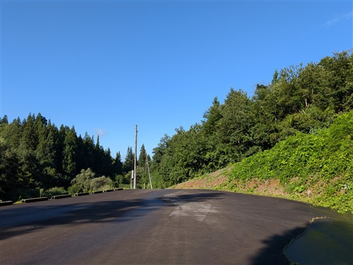
小さな公園がある。
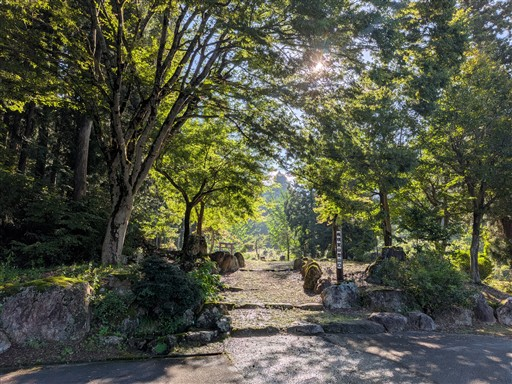
戸隠神社の立派な鳥居。
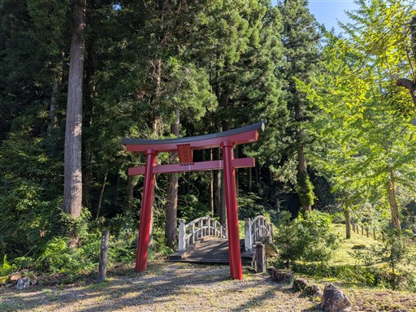
石段。損傷はなく手入れが行き届いているようだ。
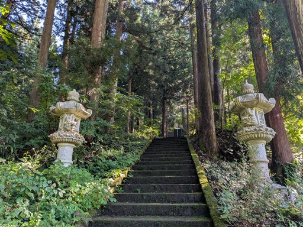
戸隠神社にお参りする。
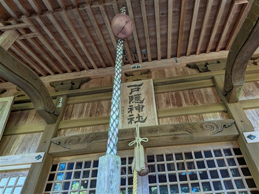
ここから登山道になる。
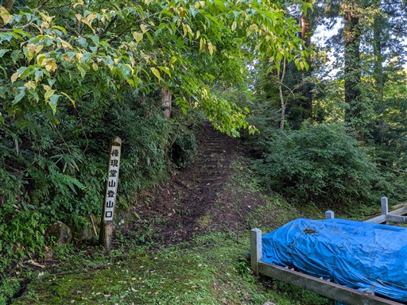
一合目で少し展望が広がる。
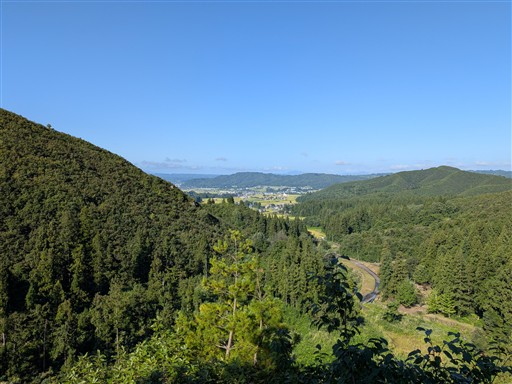
大きな松の木。
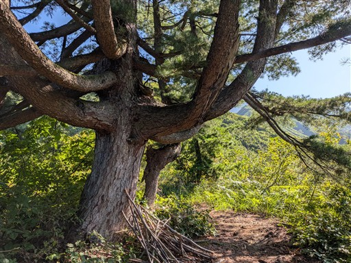
この登山道、とにかくクモの巣が多い。10歩行けばクモの巣、という感じ。
下山までに優に100個のクモの巣は叩き落とした。
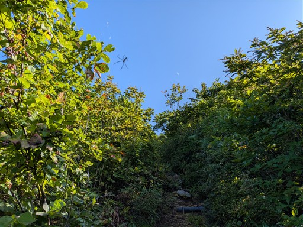
非常に展望の良い登山道。標高は低いが豪雪地帯故か背の高い木は見当たらない。
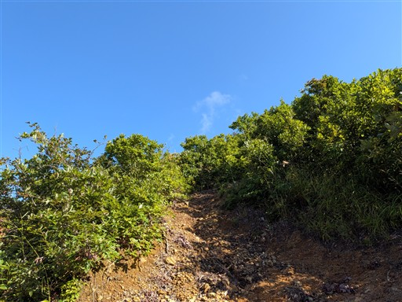
越後駒ヶ岳が見えている。その右の八海山はちょっと雲に覆われている。
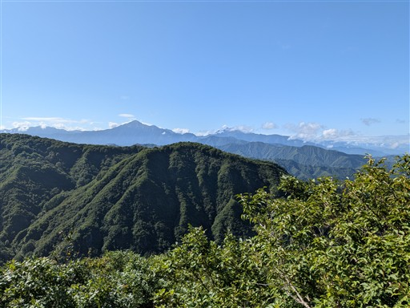
目の前の下権現堂山向かって登っていく。
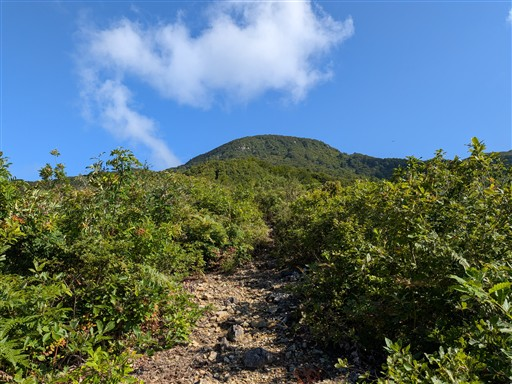
五合目。ちょうど中間地点だ。
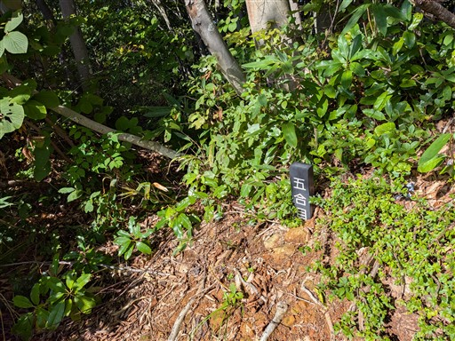
この先、周囲はブナ林地帯になる。植生の違いは地形の違いだろうか？
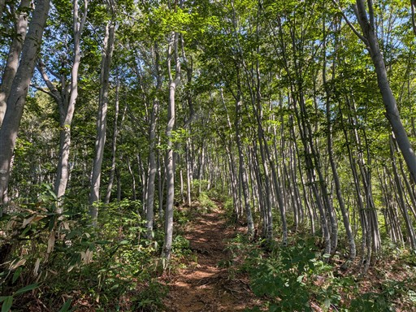
弥三郎清水。岩の下から冷たい水が大量に湧き出している。
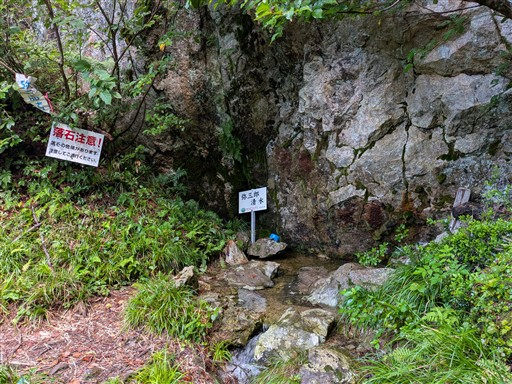
岩の隙間を登る踏み跡があったので登ってみる。
左に正規ルートと思われる道が見えたが藪が不快そうなので。
岩登りというより泥登りという感じで、特段楽しい場所ではない。
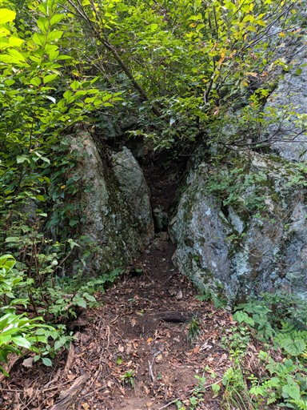
標高を上げると再び展望が広がる。眼下に魚沼盆地が見渡せる。
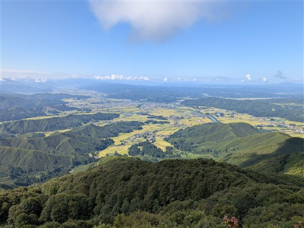
こちらは越後駒ヶ岳。さきほどより標高を上げているので手前の多くの尾根がよく見える。
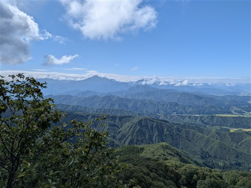
小さな石祠がある。
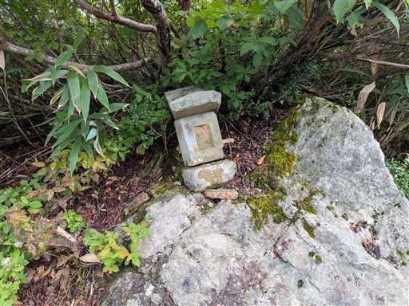
あちらこちらにホツツジの花が咲いている。
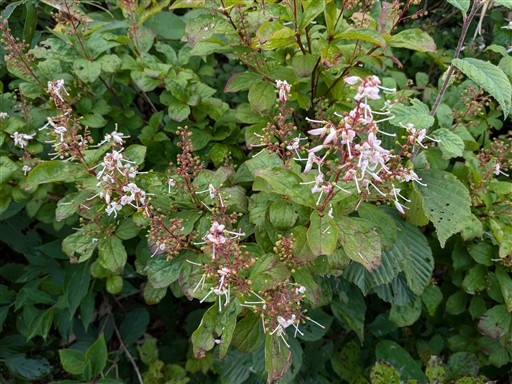
下権現堂山に到着する。標高897m。
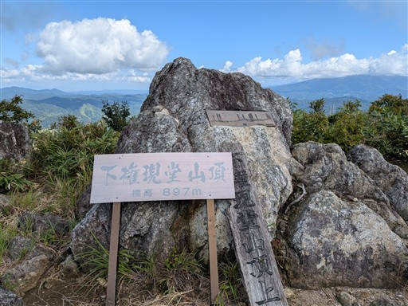
展望の良い山頂。守門岳と浅草岳が見えている。
本日は守門岳も検討したが、山頂部にちょっと雲がかかっているので行かなくて正解だったかも。
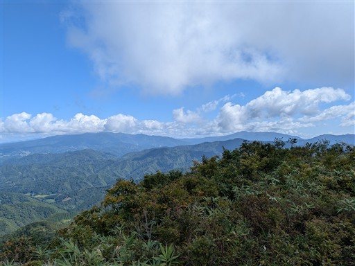
「登頂記念にどうーぞ」と書かれてあり、中にノートが入っている。
2025年版になっていて、今年は更新されていないようだ。
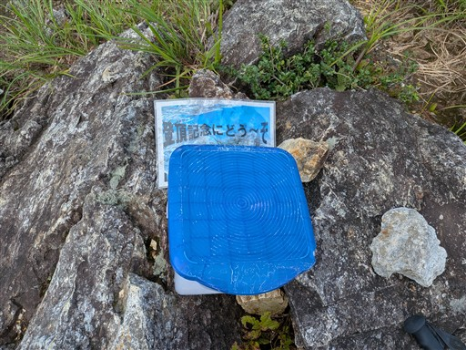
山名プレート。展望の良い山なので、こういった物があるのはありがたい。
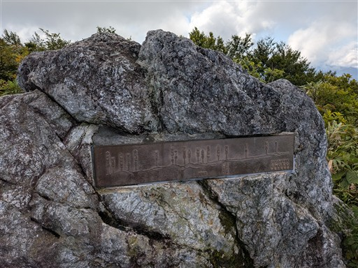
山頂にある鐘。叩くとすごく良い音が鳴る。
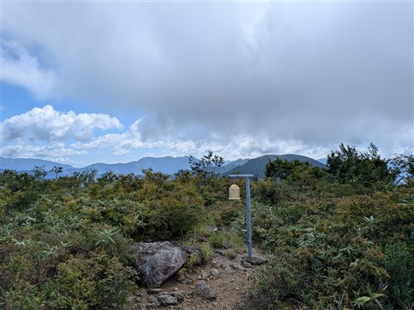
上権現堂山に向けて出発する。道はちょっと藪っぽい。
そして相変わらずクモの巣が多い。
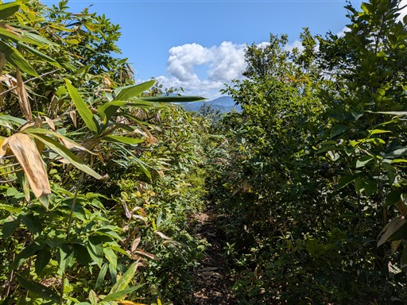
遠くに上権現堂山が見えている。大きなアップダウンはない尾根だ。
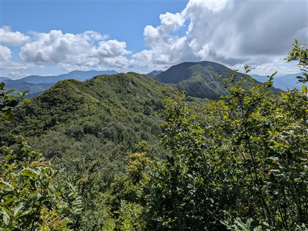
ところどころ紅葉している葉が見られる。
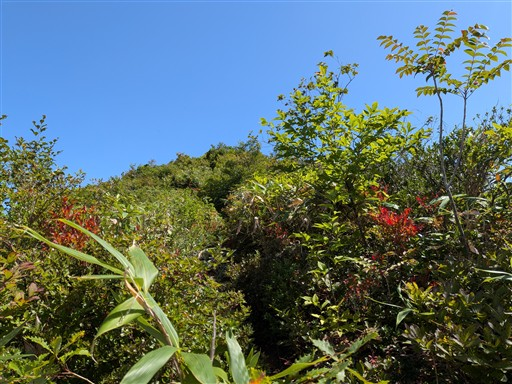
ナナカマドの実が大量にできている。
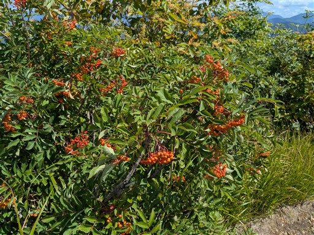
展望の良い爽快な尾根道。
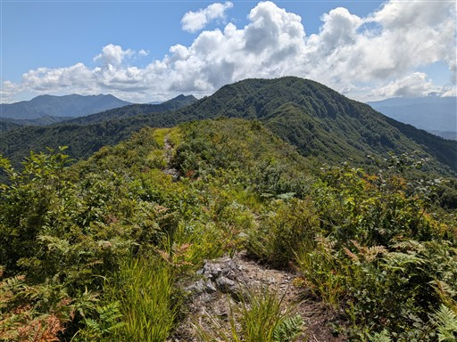
越後駒ヶ岳の辺りは残念ながら雲に覆われてしまった。
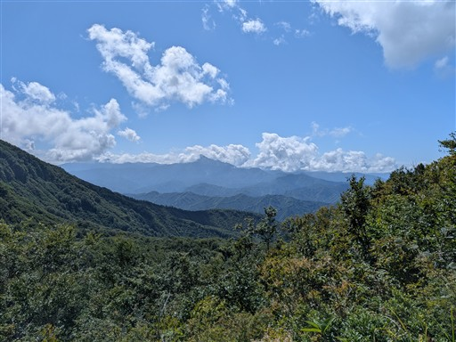
中越を過ぎると藪が濃くなる。
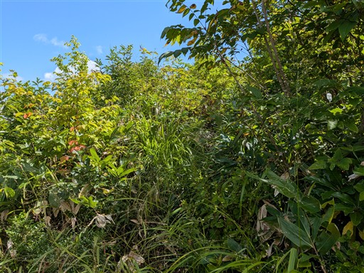
笹薮も出てきて鬱陶しい。踏み跡は明瞭。
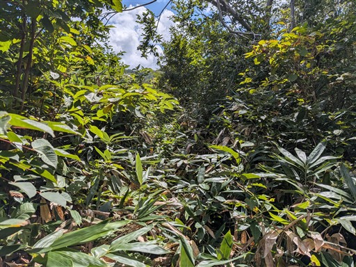
タムシバの実。不思議な形の実だ。
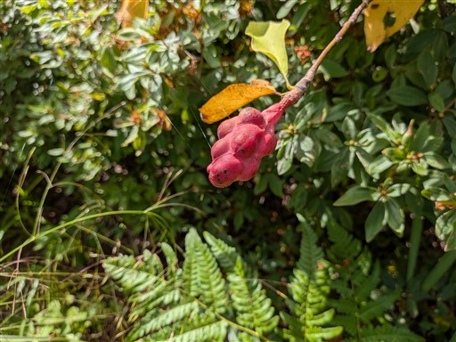
上権現堂山に到着。標高998m。
展望は広がらなくはないが、下権現堂山の方が展望は良い。
ここで昼食休憩をとる。
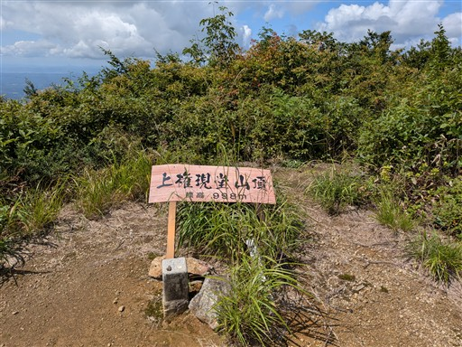
その先に続く稜線。こちらは藪が薄い。最近手入れされたのだろうか？
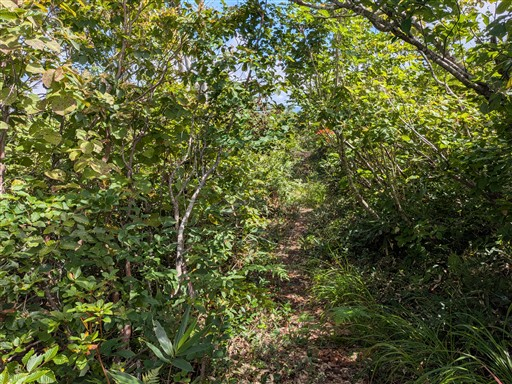
昼食を取ったら中越までは元来た道を引き返す。
クモの巣を叩き落としてきたので帰りはだいぶ楽だ。
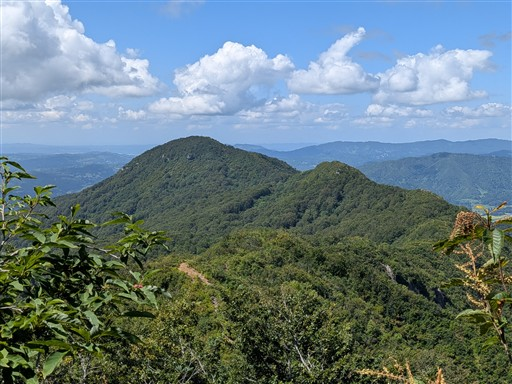
中越から直接、戸隠神社に下る道を行く。
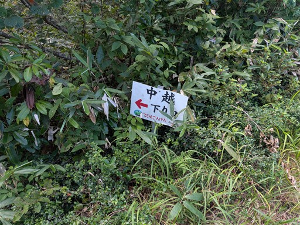
この道は比較的整備されている。
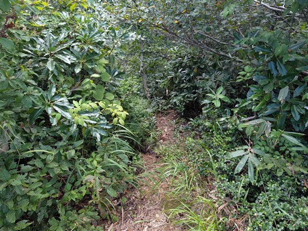
最初は沢沿いの道で何度か沢を渡る。
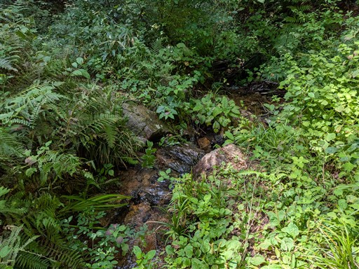
美しいブナ林。ブナ林は藪が無くクモの巣もなく快適だ。
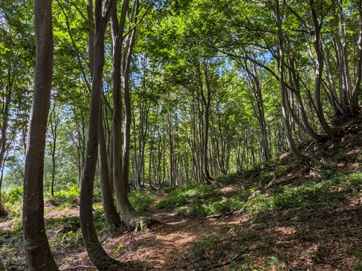
水場。今にも壊れそうな古い竹筒から冷たい水が出ている。
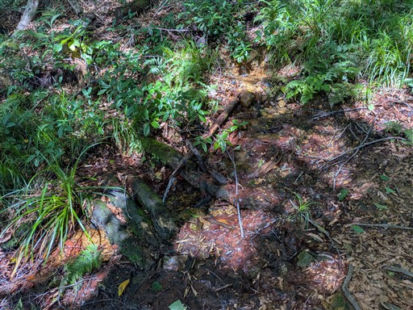
カエルを発見。ピョンピョン跳びはねていたのに、じっと見つめるとピタリと止まった。
まさに蛇に睨まれた蛙だ。
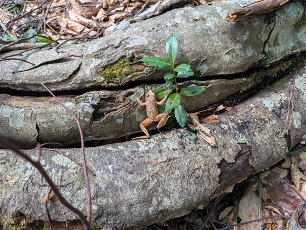
スギの大木。いつからここに立っているのだろう。
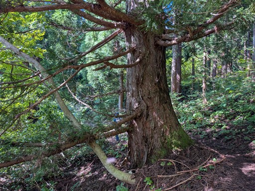
駐車場に戻ってくる。最後は大量の虫にまとわりつかれ、ダッシュで撒いて車に駆け込む。
急遽予定を変更して登った権現堂山。
クモの巣、藪、虫、そして暑さと不快指数がとてつもなく高い山だった。
山頂や稜線からの展望は良く、見える山々も越後三山や守門岳、浅草岳など
越後の名峰が見渡せるため、雪の残る春に登るのが良さそうだ。
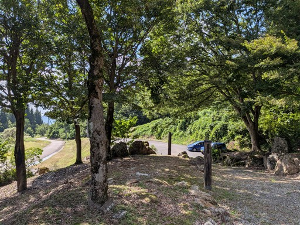